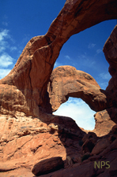
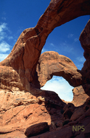
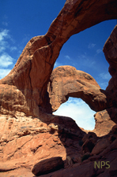

Map provided by www.nps.gov edited by P. Gorman

|  |
||
| Virtual Tour Into.... | ||
| Location Map | History of Arches | General Info |
|
Map provided by www.nps.gov edited by P. Gorman
|
||
| Link to my Android Apps 
Page Created by Patrick Gorman Last Revised 06.03.2014 by P.G. |
|---|